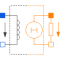

ElectroMagneticConverterWithLeakageInductanceElectro-magnetic energy conversion with a leakage inductance |

|
Information
This information is part of the Modelica Standard Library maintained by the Modelica Association.
Same as ElectroMagneticConverter with an additional leakage path on the magnetic side (leakage inductance, leakage flux). This model may improve stability especially when the magnetic circuit contains more than one electro-magnetic converter.
Parameters (5)
| N |
Value: Type: Real Description: Number of turns |
|---|---|
| L |
Value: 10e-3 Type: Length (m) Description: Length in direction of flux |
| A |
Value: 10e-6 Type: Area (m²) Description: Area of cross-section |
| mu_rel |
Value: 1 Type: RelativePermeability Description: Constant relative permeability of leakage inductance (> 0 required) |
| G_m |
Value: Modelica.Constants.mue_0 * mu_rel * A / L Type: Permeance (H) Description: Magnetic permeance of leakage inductance |
Connectors (4)
| port_p |
Type: PositiveMagneticPort Description: Positive magnetic port |
|
|---|---|---|
| port_n |
Type: NegativeMagneticPort Description: Negative magnetic port |
|
| p |
Type: PositivePin Description: Positive electrical pin |
|
| n |
Type: NegativePin Description: Negative electrical pin |
Used in Examples (3)
|
Modelica.Magnetic.FluxTubes.Examples.Hysteresis Comparison of the different hysteresis models |
|
|
Modelica.Magnetic.FluxTubes.Examples.Hysteresis |
|
|
SinglePhaseTransformerWithHysteresis1 Modelica.Magnetic.FluxTubes.Examples.Hysteresis |
Used in Components (2)
|
Transformer1PhaseWithHysteresis Modelica.Magnetic.FluxTubes.Examples.Hysteresis.Components Single Phase transformer with ferromagnetic core and hysteresis |
|
|
Transformer3PhaseYyWithHysteresis Modelica.Magnetic.FluxTubes.Examples.Hysteresis.Components Three phase transformer in Yy configuration |